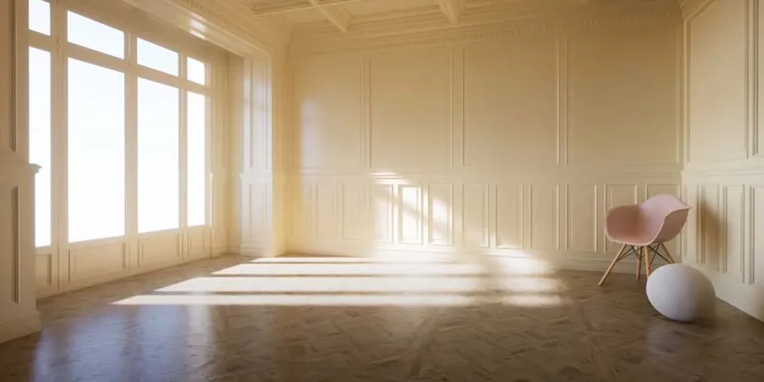
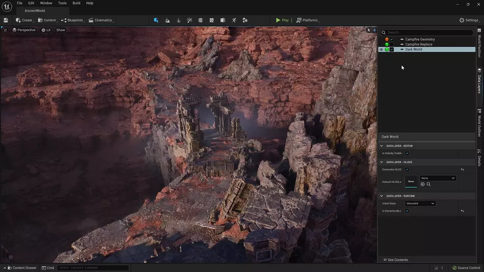
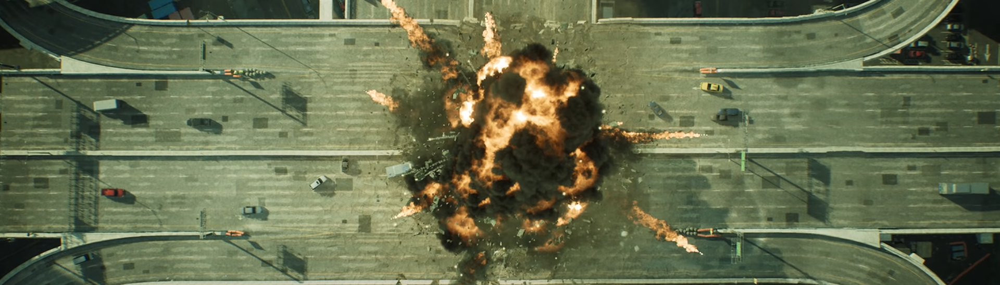
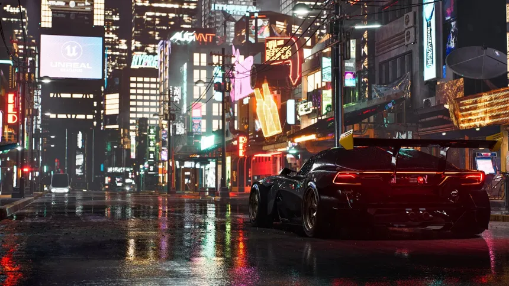
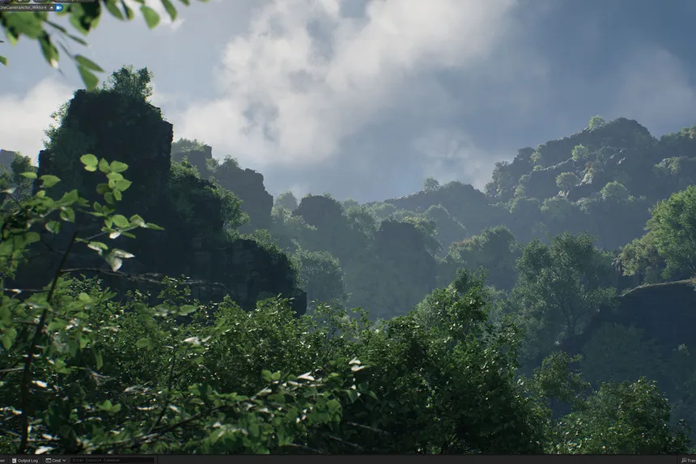
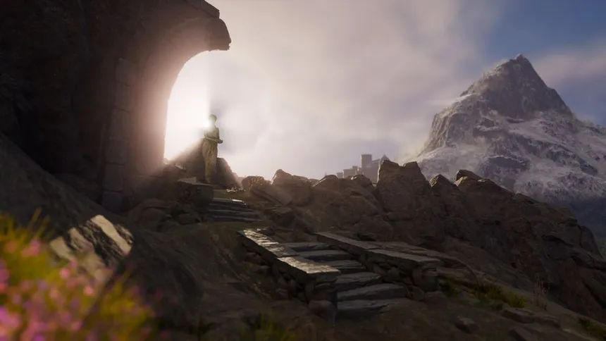

Motor gráfico de última generación creado por Epic Games. Permite a los desarrolladores crear mundos
increíblemente detallados y realistas, tanto para videojuegos como para aplicaciones interactivas.
Características Principales
Lumen: Sistema de iluminación global dinámico que permite a los desarrolladores crear entornos con iluminación realista y ajustable en tiempo real.

Nanite: Tecnología de renderizado de geometría virtualizada que permite mostrar millones de polígonos en tiempo real, brindando detalles extraordinarios sin sacrificar rendimiento.

Chaos Physics y Destruction: Un avanzado motor de físicas que permite crear simulaciones realistas de destrucción y colisiones.

Metahumans: Herramienta para crear personajes humanos extremadamente realistas con alta fidelidad en detalles y animaciones.
Tecnología Detrás de Unreal Engine 5
Ray Tracing: Trazado de rayos en tiempo real para simulación de luces, sombras y reflejos ultra realistas.

Virtual Production: Utilizado ampliamente en la producción cinematográfica, esta tecnología permite crear entornos virtuales interactivos en tiempo real para películas y series.

Open Worlds: Herramientas optimizadas para crear mundos abiertos enormes sin comprometer el rendimiento, gracias a tecnologías como World Partition que maneja la carga dinámica de grandes escenarios.

Nosotros
Nombre 1
Programador
Nombre 2
Diseñador
Nombre 3
Director Creativo
¿Listo para explorar más?
Con Unreal Engine 5 y Blueprints, el límite está en tu imaginación. ¡Empieza a crear ahora!